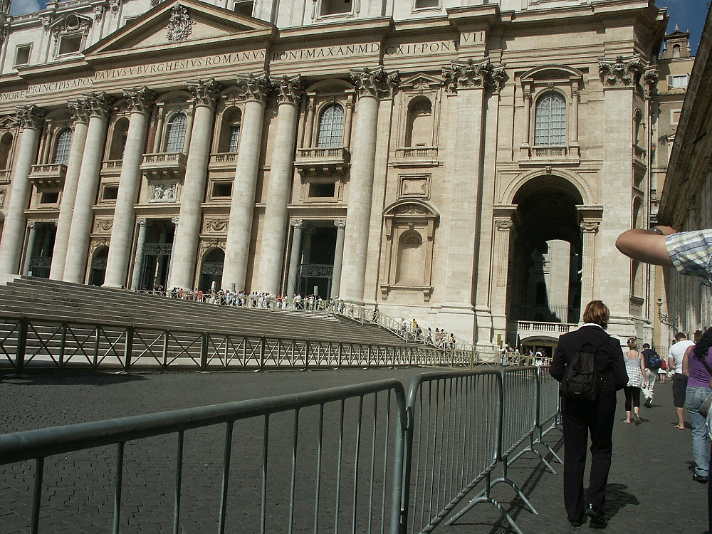

Johnnie and Oberta Baker's Photo Album Previous Gallery Next
|

Impressive looking building, but we failed to identify it and haven't found anything that says what it is.We would have liked to do more exploring, but the wheelchair was hard to push on the cobblestones. One of my mobility cart wheels had broken in Barcelona (along with all our other troubles) and at the last moment we had to rent a wheelchair that Johnnie was stuck pushing! |